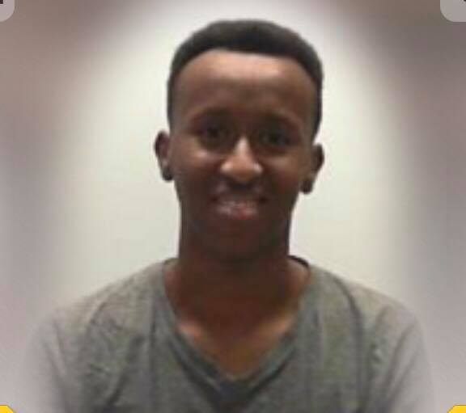

Litt om meg selv
Jeg er en glad person. Jeg kan og jeg vil gjøre ting for å fremme helbredelse i mitt liv. Jeg kan takle dette trinnet om gangen. Solen skinner; Jeg er klar til å ta på en annen dag. Mitt problem har en løsning; Jeg vil jobbe med en plan.
| Navn | hobbyer | Drømmebil |
|---|---|---|
| Mahamed Abukar | Spille spill og drikke brus | Lamborghini Aventador |


Hvorfor jeg liker musikk
Noen ganger når vi lytter til favorittlåtene våre, føler vi nesten at ordene kommer ut av artistens munn. Eller vi kan føle slagfallet i våre hjerter helt til magen vår. Det er ikke bare å høre på musikk, det føles det.
Motto:
"Chase the vision, not the money, the money will end up following you"